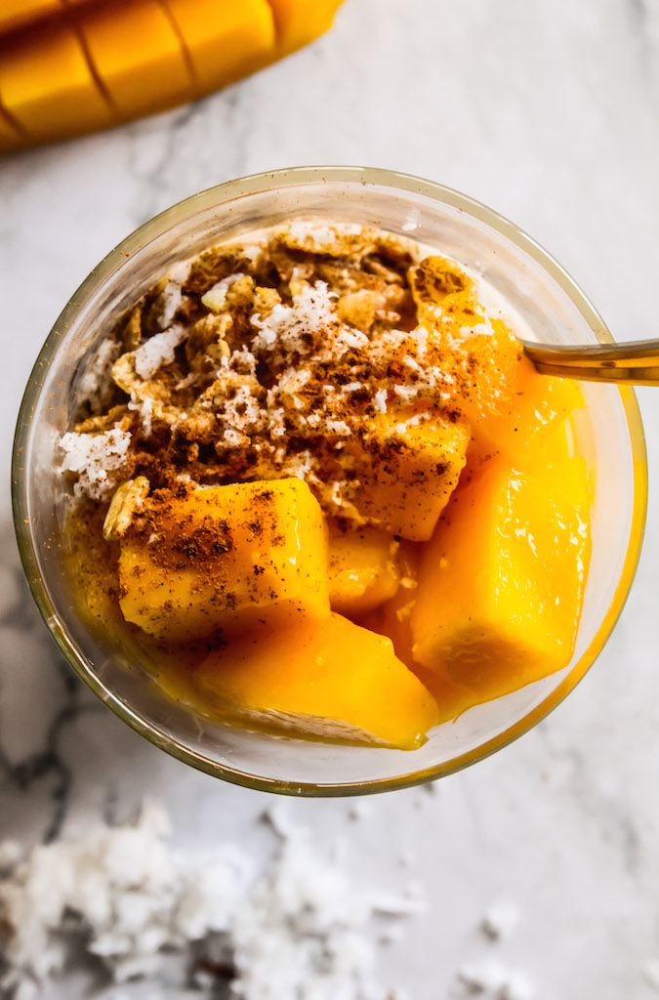
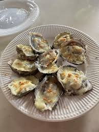
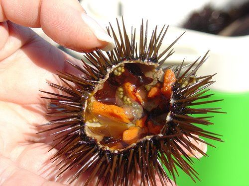
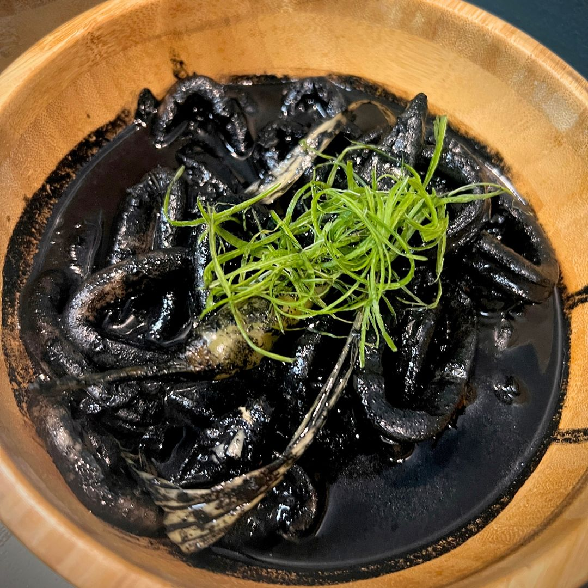
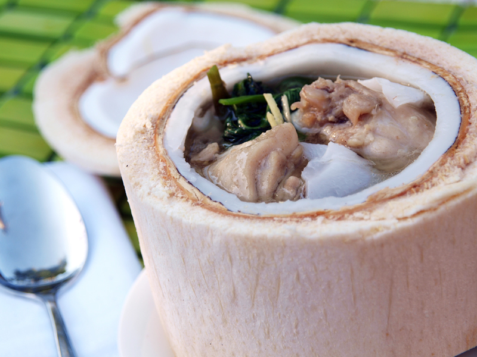

Local Dishes
Talaba, Pitaw, Binakol, Adobong Pusit, and other authentic Guimaras flavors.
The Local Dishes in Guimaras

Mango-based Desserts
Guimaras is famous for its sweet mangoes incorporated into a wide range of desserts — mango float, mango tart, mango ice cream, and other treats that highlight the exquisite taste of Guimaras mangoes.

Talaba (Oysters)
Guimaras is known for its fresh and succulent oysters, locally known as "talaba." Enjoy them raw, grilled, or cooked in various dishes to experience the briny and delicious flavors of the sea.

Pitaw (Sea Urchin)
Pitaw, or sea urchin, is a local delicacy in Guimaras. These creamy and flavorful sea urchins are often enjoyed fresh or incorporated into dishes like pasta or ceviche for a unique culinary experience.

Adobong Pusit (Squid Adobo)
A popular seafood dish featuring squid cooked in a savory and tangy adobo sauce. The tender squid infused with adobo flavors makes for a satisfying and comforting meal.

Binakol Chicken Soup
A traditional Filipino dish made with native chicken cooked in coconut water, along with young coconut meat, lemongrass, ginger, and sometimes green papaya or chayote. Light, slightly sweet, and refreshing.